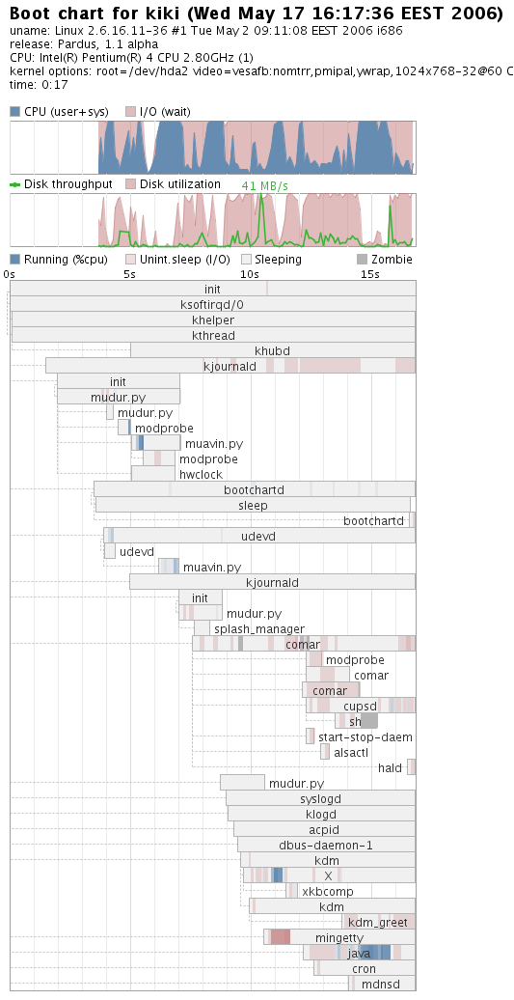

Speeding Up Linux: One Step Further With Pardus
Gürer Özen, Görkem Çetin
Abstract: For a long time, Linux has been blamed to boot slowly, compared to other modern operating systems. In this article, we are going to focus on a new init system we developed for our Pardus Linux distribution, Mudur, together with other initiatives that are worth mentioning. Mudur is written from scratch in Python with simplicity, speed and maintainability in mind. It isn't a replacement for the /sbin/init command like some other alternatives, nor just a parallel script executor. Mudur greatly simplified our boot process, making it faster and more flexible. Authors look forward for future boot process research for further improvement and optimizations.
You may download and try our 1.1 alpha3 release to see Mudur and Pardus distribution in action from ftp://ftp.pardus.org.tr/pub/pardus/kurulan/1.1-Alpha3
1 Problem
Distrowatch.com lists more than 400 distributions, most of which are used for everyday lives at home. Similarly, most, if not all, of the distros listed have been derived from other major distributions such as Slackware, Fedora, OpenSUSE, etc. This gives developers a high degree of freedom and re-use of existing components, i.e a stable base system, package repositories, a great multitude of patches and security fixes. A recent study[1] has enabled for Linux newcomers to have an idea about the roots of distributions.While there's always a hot, ongoing debate about which package manager to use, Pardus developers have chosen not to rely on any package managers and decided to roll a brand new one. This may seem like a re-invention of the wheel, however one of the core developers, Çaglar Onur, claims that a new approach to build packages with PiSi gives extreme flexibility for packagers. The new package manager, PiSi (packages installed successfully as intended) is completely written in Python. While PiSi deserves a full article of its own, we'll be focusing on another new approach, also written in Python, Pardus presents, a new init framework called Mudur1 which primarily focuses on notoriously slow and complex initialization system of Linux.
Before starting to dig into Mudur, let's investigate how other technologies lead to a better init system. IBM has initially worked on a parallelization model[2] which shows how to improve the boot speed of a Linux system without compromising usability. The technique merely involves parallelization of services during boot time and reduce startup time of the whole system. Probably all readers interested in init systems have an in-depth knowledge about Initng[5], which dramatically decreases the boot up duration and already used by some distributions. Initng is a full replacement of the old sysvinit tool. It is designed to significantly increase the speed of booting a unix-compatible system by starting processes asynchronously. Last but not least, another alternative depinit[7] has been driving attention for quite some time, with the ability to handle parallel execution, dependencies, true roll-back, pipelines, improved signaling and unmounting filesystems on shutdown. According to the developers, it's somehow experimental and requires some time to incorporate an existing system.
While Linux is blamed to boot slower for some time, the work ongoing listed above will lead to faster boot times in conjuction with steady and consistent advances in CPU speeds, cache improvements and dropping of hard disk seek times. Believe it or not, this has been a serious issue in other operating systems like MacOS X or MS Windows. For example, in Mac OS X v10.4 Tiger, Apple introduced a new system startup program called launchd. The launchd daemon takes over many tasks from cron, xinetd, mach_init, and init, which are UNIX programs that traditionally have handled system initialization, called systems scripts, run startup items, and generally prepared the system for the user[11]. Likewise, Windows uses BootCache, Hot File Clustering and similar techniques to boost performance.
2 What Mudur Brings
Mudur has been developed for Pardus, so it's probably not readily usable for other distributions immediately. Since Mudur uses completely rewritten service scripts, it needs a genuine modification of the files read after init is executed. In this manner, Mudur resembles that of initng and depinit. In this chapter, we are going to summarize our approach, and explain why this is a better solution for startup related speed, configurability and maintainability problems.High Thoughts Must Have High Language
As said by Aristophanes, 405 B.C., this great wisdom is still not yet understood by many free software developers.Our main concern was not only the speed of initialization process, but maintainability of the code base. Our previous experience with Gentoo init system while adding internationalization support showed that shell scripts are a maintainability nightmare.
Why shell scripts, traditional batch processing tool of Unix, are not suitable for this job? Answer lies in the commands used by this scripts. Since shell scripting language doesn't have flexible and easy to use flow control and data structures, most of these operations are offloaded to other specialized tools like sed, awk, and in some cases perl. One particular case of Gentoo was the env-update.sh script. Its job was as simple as joining the values in /etc/env.d files and generating a /etc/profile.env file. Script was using another awk script, which in turn uses a special awk plugin module written in C.
All those special tools with their inefficiencies and their size turns the system into a strange Rube Goldberg contraption. So, we decided to choose a single language, and use it everywhere in the initialization subsystem.
Low level languages like C or C++ are fast but also suffers from maintainability problems. Source codes become even bigger than shell scripts, and development time significantly increases.
Among the high level languages, Python seemed to be the best choice, since we already use it in many places like package build scripts, package manager, control panel modules, and installer program YALI2. Python has small and has clean source codes. Standard library is full of useful modules. Learning curve is easy, most of the developers in our team picked up the language in a few days without prior experience.
A simple boot test with init=/usr/bin/python showed that loading of Python core and built-in modules takes 1.5-2 seconds3. From then on, only a few system tools (mount, udev, fsck, modprobe, etc), and actual services (kdm, ssh, apache, etc) are loaded. This is quite acceptable if you consider total time and disc IO saved. Having Python cached in the memory also helps speeding up our other programs.
Current code size is around 1500 lines. Our previous (Pardus 1.0) Gentoo based system was more than 10000 lines.
If It's Not Broken, Don't Fix It
Almost all boot time speeding up projects are obsessed with the idea of replacing the ``init''. This is the parent of all processes. Its primary role is to start other processes like console terminals and actual initialization scripts as written in the file /etc/inittab.Since this is a very system level program, writing a replacement is tricky and time consuming. We couldn't think a real benefit. Running services in paralel can be done from a script, directly managing service processes is also much easier with a little smarter /var/run/*.pid management.
We just set our Python script to run in /etc/inittab and work on the real problem.
Service Scripts
Basic jobs of initialization, i.e. loading modules, starting udev device manager, mounting filesystems, updating system clock are handled by a single Python script. This saves loading time and makes it simple. These early startup jobs should run sequentally anyway.Other service scripts should come with their packages. Handling and paralel running of those scripts are handled by another Pardus project called Çomar. Çomar (COnfiguration MAnageR) is a system daemon. It has a system model with classes and methods. Installed software packages register their Çomar scripts (also written in Python) to the classes on the model.
In case of initialization system, every package which provides a service, registers a script to the System.Service class. This class has methods like start, stop, reload, info, etc. Configuration tools can query this objects and control them with given methods. An access control system makes it possible to give control of services to specific users or groups and prevent others from accessing them.
Main startup script runs Çomar daemon, and when called with ``default'' runlevel by init, calls System.Service.ready method on Çomar, thus starting all services in parallel. Service scripts can call other scripts start methods for implementing dependencies, and wait for Çomar notification for handling restarts.
Çomar keeps the state of services, so only services previously turned on are started automatically.
Çomar has many other features and classes used in Pardus system for network management, user management, automatic configuration of graphic subsystem, and remote management. It also has access control, profile, remote management facilities. Those are out of scope of this document.
Limiting Resource Is IO, Not CPU
Harddisks are not necessarily slow, they can transfer data at the rates of 20-30Mb/s, but their seek times are awful. If you read data in a random manner, you can get quite a bad disk performance.It is possible to deal with this problem at the filesystem level, but deserves quite a work. Luckily, we can benefit from simpler methods.
First thing to consider is never leaving disc IO empty. Parallellism helps greatly here. Some operations like setting system clock from hardware clock, pauses the system for a few seconds. You can utilize those seconds by loading something else in the background.
We also take a great care of not generating extra IO due to internal machinery of startup scripts. Shell based initialization systems generally use a lot of temporary files, and generate lots of small IO operations themselves.
Slowness of interpreted nature of Python is really insignificant here. After the initial loading of Python interpreter, scripts run instantly. Blocking happens only at calling external programs like modprobe and fsck.
Sleep Considered Harmful
We have seen sleep commands in initialization systems and in many of service scripts. This is probably due to lacking shell primitives for properly checking the service status.After starting a service, there is a short time which start function returns but service itself does not really sets its communications ports (sockets, files, etc). Sleep statements are used to prevent such race conditions. But this isn't a good thing to do. Setup might take a bit longer than given time value, and if you give that value higher, then you unnecessarily wait.
Instead of using this unreliable method, we just wait for actual resource (socket, file, etc), so never waste any extra time. This optimization alone saved almost 5-6 seconds on our initialization.
Another variant of this problem happens with udev. Device nodes under the /dev folder are created in a random order. Ubuntu recently started on a replacement init system[10] to address this problem. They claim that due to these issues and hotplugging, it's no longer possible to guarantee the availability of particular devices at a particular point in the boot process. Their new system is designed to be event based, running scripts on certain events. We think hotplug devices are handled and mounted much better by udev rules instead of fstab, and that makes their rationale pretty pointless.
3 Components
Pardus initialization system is composed of following programs:
Mudur
This[14] is the main package of the initialization system. Basic script is /sbin/mudur.py which is called by /sbin/init during the system runlevel changes, and handles basic initialization and shutdown jobs. Another script is /sbin/muavin.py which is called by mudur.py during the startup, and scans available hardware and loads necessary kernel modules (coldplug). Muavin4 is also called by udev on hotplug events, and handles module and firmware loading operations. There are also a set of commands like update-modules, update-environment, etc used by package install script, or system admins. Those are written in Python too.Çomar
Configuration manager[15] is a very small system daemon written in C. Pardus packages register their service scripts to Çomar, which is called by mudur.py for starting and stopping services. User interfaces also use Çomar for managing services. Handles parallel execution, access control, profile management and remote management.User Interfaces
There is a service command which can query the status of services, and can start/stop/restart them. There is also a KDE KControl Service Manager module with same capabilities. Since they use Çomar for actual operation, they are just very simple wrappers.Service Scripts
Scripts themselves come with the Pardus packages and managed by Çomar. Here is a sample script for kdm:-
from comar.service import *
import os
serviceType = "local"
serviceDesc = "KDE Desktop Environment"
serviceDefault = "on"
def configure():
if not os.path.exists("/etc/X11/xorg.conf"):
run("/sbin/xorg.py")
def status():
return checkDaemon("/var/run/kdm.pid")
def start():
call("System.Service.start", "acpid")
call("System.Service.start", "dbus")
configure()
loadEnvironment()
os.environ["XAUTHLOCALHOSTNAME"]=os.uname()[1]
if run("/sbin/start-stop-daemon", "--start", "--quiet",
"--exe", "/usr/kde/3.5/bin/kdm"):
notify("System.Service.changed", "started")
def stop():
if run("/sbin/start-stop-daemon --stop --quiet --exe
/usr/kde/3.5/bin/kdm"):
notify("System.Service.changed", "stopped")
4 Benchmarks
You can't improve what you can't measure. Hopefully there is a well known tool called bootchart[4] which generates detailed graphics. Resource utilization and process information are collected during the boot process and are later rendered in a chart. A typical Pardus boot sequence on a P4 2.8GHz, 1GB RAM, 80GB 5400 rpm IDE disk is shown below:
5 Conclusions
Mudur is currently in a working state starting from Pardus 1.1 alpha. Interested and experienced developers are more than welcome to build new enhancements on top of this model. Below, a table showing the current advantages and disadvantages of the new Mudur init system is given.| Criteria | Advantage |
Disadvantage |
| Speed | Very fast without comprimising maintainability. |
None observed |
| Maintenance | Understanding the code, debugging, adding new functionality are all
very easy. |
None observed |
| Dependencies | All Perl, sed, awk, grep, cut, find, and advanced shell dependencies
are removed from base system. |
Base system now depends on Python runtime and a few of its modules
(around 1 MB). |
| Features | Some advanced script dependency constructs of Gentoo like virtual
script dependencies are not supported. |
|
| Work | Service scripts need to be rewritten in Python. This isn't a big problem
for us though, Pisi packagers already use Python for other facilities,
and there aren't many service scripts to replace with. All scripts
in the Pardus 1.1 alpha2 release are already converted. |
We are getting very good results with file cache kernel patch[13] of Jens Axboe. Boot time is shortened only a bit, but since it can cache not only boot process but user session as well, typical launch time of an application like OpenOffice.org from cold start of the computer is significantly improved without even using preloading.
We are looking ways to integrate fcache into our boot system, and automatically handle re-priming when cache becomes out of date with software updates.
References
- [1]
- Linux Distributions Bird's Eye View, http://linuxhelp.blogspot.com/2006/04/linux-distributions-birds-eye-view.html
- [2]
- Service startup parallelization paper of James Hunt,
IBM, http://www-128.ibm.com/developerworks/linux/library/l-boot.html
- [3]
- Boot time reduction techniques for embedded systems,
http://tree.celinuxforum.org/pubwiki/moin.cgi/BootupTimeReductionHowto
- [4]
- Startup process benchmark program, http://www.bootchart.org/
- [5]
- Init replacement project, http://www.initng.org/
- [6]
- Another replacement, http://www.fastboot.org/
- [7]
- Even another replacement, http://www.nezumi.plus.com/depinit/
- [8]
- Yet another try, http://www.atnf.csiro.au/people/rgooch/linux/boot-scripts/
- [9]
- Recently, Ubuntu started on their own replacement,
https://wiki.ubuntu.com/ReplacementInit
- [10]
- Startup related filesystem optimizations in Mac OS
X, http://www.kernelthread.com/mac/apme/optimizations/
- [11]
- Mac OS X, new system startup program, http://developer.apple.com/macosx/launchd.html
- [12]
- Discussion of preload techniques, http://kerneltrap.org/node/2157
- [13]
- Jens Axboe's ext2 filesystem cache, http://comments.gmane.org/gmane.linux.kernel/406364
- [14]
- Mudur source code, http://svn.pardus.org.tr/uludag/trunk/comar/mudur/bin/mudur.py
- [15]
- Çomar source code, http://svn.pardus.org.tr/uludag/trunk/comar/comar
- [16]
- Pardus 1.1 alpha3, ftp://ftp.pardus.org.tr/pub/pardus/kurulan/1.1-Alpha3
- 1
- Mudur means ``director'' in Turkish.
- 2
- YALI is the installer of Pardus Linux. More information on http://www.pardus.org.tr/eng/projects/yali
- 3
- This time also includes basic system libraries (glibc, pthread, etc) used by Python components.
- 4
- Muavin means assistant (used here for its specific meaning, the guy who assists for loading/unloading passenger cargo on an intercity bus) in Turkish.
Information and documents on Pardus web pages can be used freely anywhere with original source credit.
For information and suggestion(s) please write to info_at_pardus.org.tr
TÜBİTAK - UEKAE, PK.74 41470, Gebze / Kocaeli.